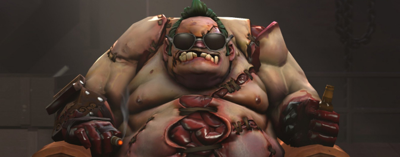
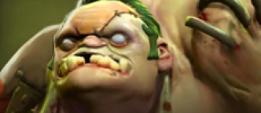

История серии игр Dota началась в 2003 году с Defense of the Ancients (DotA) — пользовательской модификации для игры Warcraft III: Reign of Chaos, созданной разработчиком с псевдонимом Eul. Дополнение для Warcraft III под названием The Frozen Throne было выпущено позже в том же году. Модификации серии Defense of the Ancients для нового дополнения соревновались в популярности. Наибольший успех имела DotA: Allstars, разработанная Стивом Фиком с псевдонимом Guinsoo, и Фик совместно с его другом Стивом Месконом создали официальный сайт сообщества Defense of the Ancients, а также компанию DotA-Allstars, LLC. Когда Фик в 2005 году прекратил работу над DotA: Allstars, его друг с псевдонимом IceFrog стал геймдизайнером игры. Популярность Defense of the Ancients значительно возросла, модификация была одной из самых общеизвестных в мире, а к 2008 году стала киберспортивной дисциплиной. В мае 2009 года в результате ссоры с Месконом IceFrog открыл новый сайт сообщества по адресу playdota.com
Но игру заметили, и это стала компания Valve. Приняв к себе в штат сотрудников создателя Доты IceFrog’a, они совместно 13 октября 2010 анонсировали выход новой игры Dota 2, во что многие сразу отказались верить. По их мнению, крупная компания думает только о прибыли, и способна лишь загубить дух игры, но Доту 2 ждала другая участь…
15 августа 2011 был опубликован официальный трейлер игры, и уже со следующего дня начался приём заявок на закрытое бета-тестирование проекта, и игра была запущена в какие-никакие, но массы. Следующие два года для Доты будут знаменоваться поиском и ожиданием заветных ключей для доступа в игру, но к концу 2012 года активное игровое сообщество Dota 2 составляло около 3(!) миллионов игроков по всему миру, кроме Китая, где закон не позволял так просто распространять игру, где был хоть какой-то намёк на насилие и прочее.
9 июля 2013 года после продолжительного ЗБТ игра наконец-таки вышла в свет, состоялся официальный релиз.
Пудж– это едва ли не самый популярный герой во второй Доте. Сложный в освоении, но невероятно сильный персонаж, он снискал себе популярность у тысяч дотеров по всему миру. Чтобы научиться хорошо играть за Pudge, вам может потребоваться не один десяток матчей.
Лучшими игроками на пудже считаються Dendi и Vega